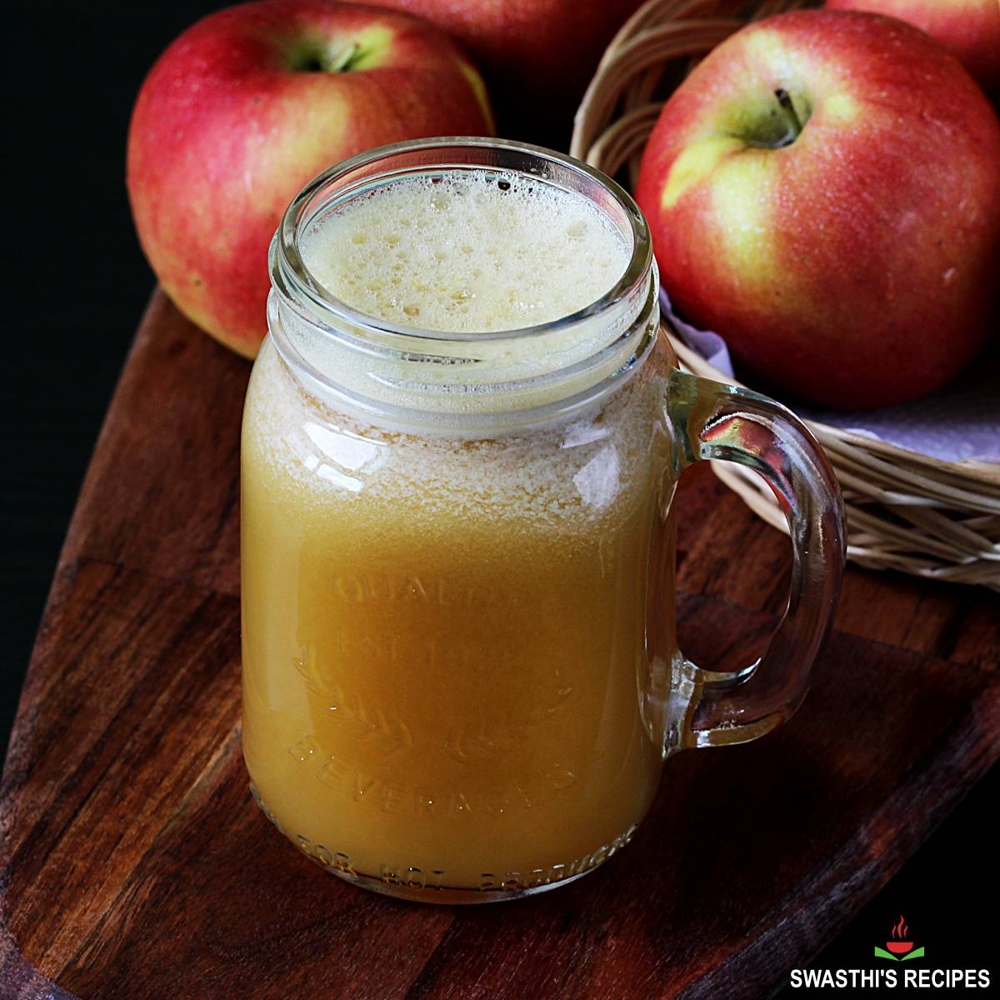

Apple Juice

Description
Instead of spending big bucks for fresh, healthy apple juice, learn how easy it is to make your own.
Ingredients
- 18 Apples
- Cinammon (optional)
- Sugar (optional)
Steps
- Start by washing and then coring the apple to remove seeds. Cut the apples into slices. There is no need to peel the apples.
- Add the apples to the pot and add enough water to just cover them. Too much water and you will have pretty diluted juice. This juice may come out a bit strong, but it is a lot easier to dilute the juice with extra water rather than trying to make the flavor stronger.
- Slowly boil the apples for about 20-25 minutes or until the apples are quite soft. Place a coffee filter or piece of cheesecloth in your fine mesh strainer and place over a bowl.
- Taste the juice after it is cooled for a bit. You can add additional sugar or cinnamon depending on your preferences. Again, if the flavor is too strong, you can add water a little bit at a time to weaken the flavor.
- The apple mush you collected can easily be turned into applesauce by pureeing and adding a smidgen of sugar and cinnamon to taste.
- Keep in mind your homemade apple juice does not have any preservatives so be sure to keep it refrigerated and to use it within a week!